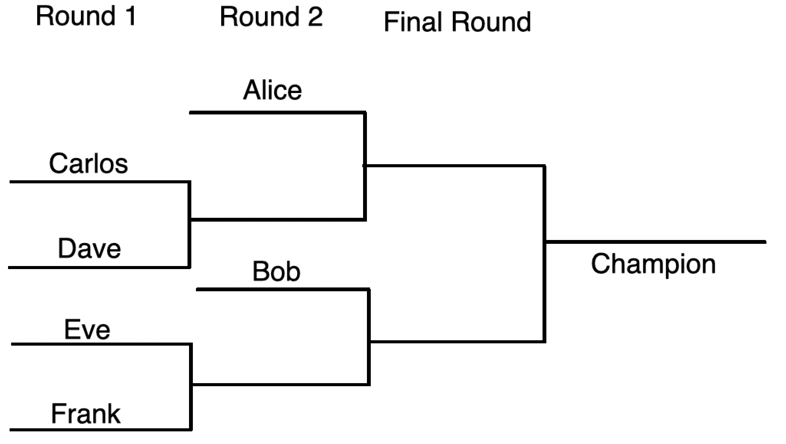

In the year 2032, Alex will be holding the International 1 v 1 Competitive Coding Competition, a single elimination tournament that will definitely find the world champion of competitive programming.
Ideally, Alex would like to have exactly $2^k$ competitiors in the tournament, where $k$ is an arbritary non-negative integer because that would make the bracket very simple to make. However, Alex wants to include everyone who wants to compete, so to fix the bracket, he will give some competitors a first round bye. This essentially means that some coders will start the tournament in the second round in order to make the bracket functional. For instance, if there were 6 coders in the tournament, two coders would get first round byes, and the overall bracket would look like the following:
In the example above, Alice and Bob get first round byes.
But of course, Alex also just has to make this tournament interesting. In fact, he wants to give some competitiors, mainly ones that are highly skilled (or anyone who bribed him) second round byes, allowing them to automatically start the tournament in the third round! Here is an example of a bracket where only Alice gets a second round bye:
Now Alex has a bit of a conundrum: he has a certain number of coders that he wants to give a second round bye to, and he has to determine how many coders should also be given a first round bye in order to make the bracket functional. And as it turns out, sometimes, this isn't even possible, as if too many coders receive second round byes, there may not be enough coders remaining to fill out the bracket.
The first line contains an integer $t (1 <= t <= 256)$, the number of testcases.
The following $n$ lines each contain a single testcase comprised of two single spaced integers $n$ and $k$. $n (n >= 1)$ is the number of coders that are in the tournament, and $k$ is the number of coders Alex wants to give a second round bye to. In all cases, $n >= k$ is guaranteed.
If the bracket can be formed properly, output a single integer $x$, where $x$ is the number of coders that must receive a first round bye for the tournament to be functional. If it is impossible to create a functional bracket, output `-1`.
Case 1 (64 points): Alex is running a fairly local tournament, so $n$ will be at most 256.
Case 2 (36 points, 100 total): Alex (somehow) got a lot of people to join this tournament. Actually, the entire world. In this case, $n$ will be at most 8501936885. Yes that is the exact population of the world in the year 2032.
stdin5 6 0 5 1 12 12 6 2 7 2
stdout2 0 -1 -1 3
Subtests 1 and 2 are visually described in the bracket images shown above. Subtest 3 is impossible for everyone in the tournament to have a second round bye. Subtest 4 is impossible because while you can fill out the tournament by giving the other 4 coders first round byes, then everyone would have a bye, so in technicality, the coders that got the first round bye would gain zero actual benefit while the two coders with second round byes would only be skipping one actual round, thus this is an invalid bracket. In subtest 5, two coders play each other in the first round. The winner of the first round joins the 3 coders receiving a first round bye for the second round. This will produce two coders that will join the 2 coders that received a second round bye, giving 4 total coders in the third round. From there the bracket can proceed as normal.